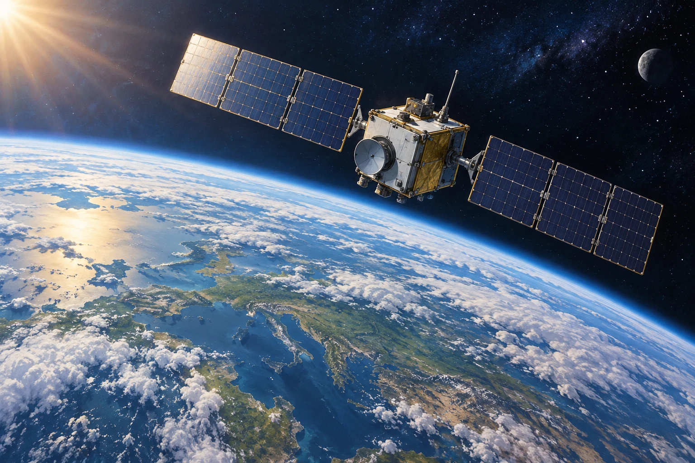

Zusatzaufgaben · Physik
Fermi-Aufgaben · Kreisbewegung Gravitation und Physikalische Weltbilder
Wählt eine Aufgabe und entwickelt euren eigenen Lösungsweg.

Aufgabe 18 · EF
Wie lange braucht ein Satellit für einen Umlauf?
Ein Satellit bewegt sich auf einer annähernd kreisförmigen Bahn 400 km über der Erdoberfläche. Wie lange benötigt er ungefähr für einen vollständigen Umlauf um die Erde?